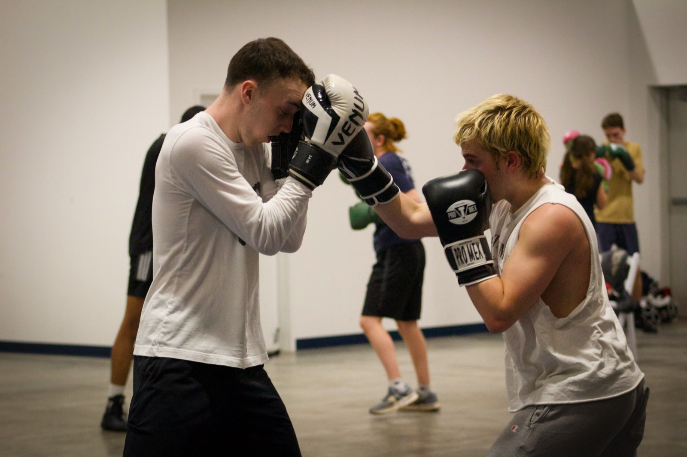
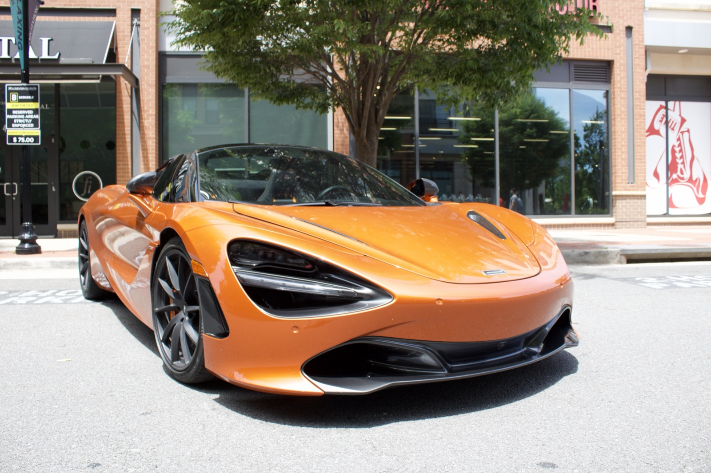
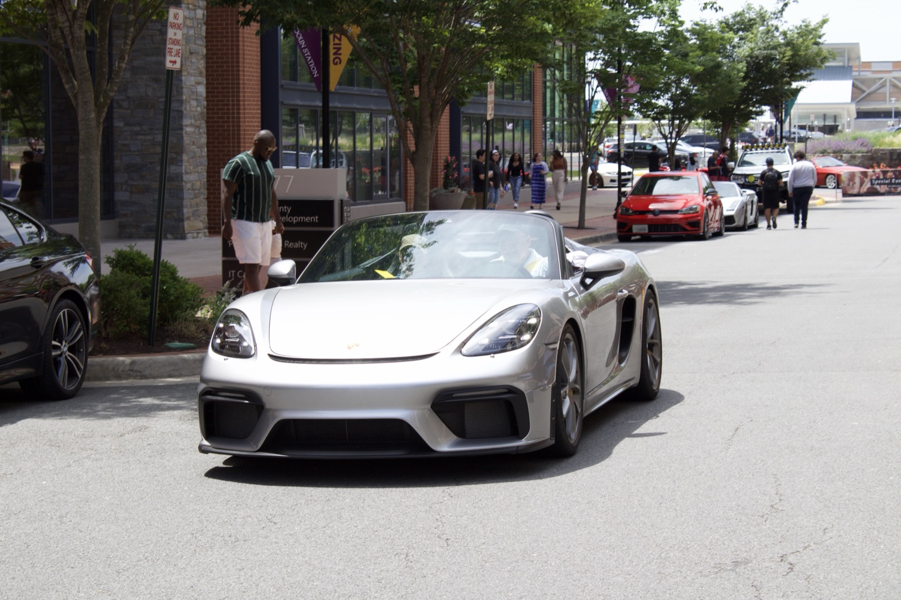

Portfolio
Photography
-

Energy Express -
Group Portrait -

Rooftop Lunch -

Sparring -

Veni, Vidi, Vici -

Orange Supercar -

Silver Convertible
Graphics
-
Day of Giving -
Building an Automated Form with Qualtrics -

Group Fitness: Trail Running -

Experiential Learners -

Lewis Fellow Spotlight: Jerrett Dempsey -

Lewis Fellow Spotlight: Taylor Miavitz